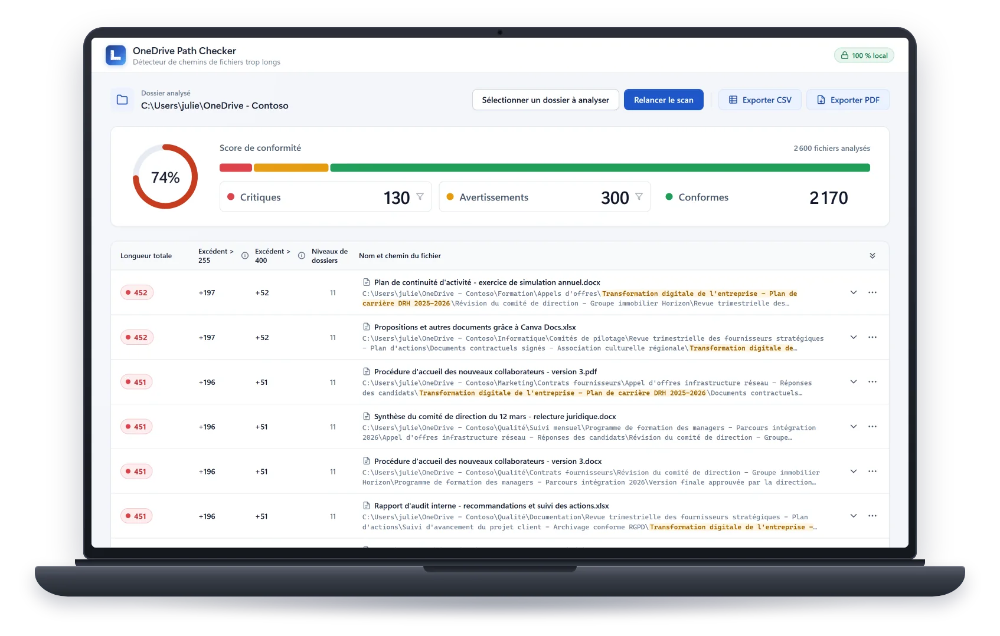

Obtenez un diagnostic clair en quelques secondes.
Repérez les fichiers dont le chemin est trop long, corrigez-les en quelques clics ou partagez un rapport détaillé avec vos équipes.

La cause est souvent invisible : un chemin de fichier trop long.
Au-delà de 255 caractères, le fichier se synchronise mais Windows ne peut plus l'ouvrir depuis l'Explorateur. Vos équipes ne comprennent pas pourquoi.
Comprendre l'erreur →Au-delà de 400 caractères, OneDrive ne synchronise plus le fichier et affiche une erreur tant que le chemin est trop long.
Comprendre l'erreur →Sélectionnez votre dossier OneDrive à scanner :
Découvrez combien de fichiers posent problème :
Raccourcissez les chemins de fichiers depuis l'application :
Essayez gratuitement pendant 24 heures, puis achetez votre licence.
Entreprise : vous souhaitez déployer l'outil sur plusieurs postes de travail ? Demandez un devis